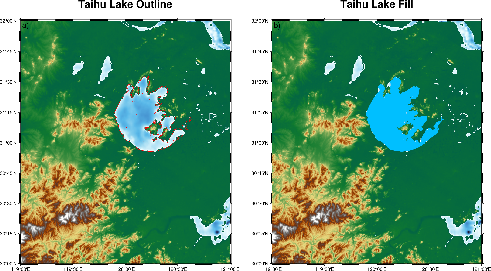

带岛屿的湖泊填充
在地理信息可视化与制图中，当绘制湖泊或其他多边形地物时，若湖泊内部存在岛屿， 直接填充颜色可能导致岛屿区域被同样填充。为了实现仅填充湖水而保留岛屿， 需要利用 GMT 的“带洞多边形”功能。
实现此目标通常包含以下步骤：
准备湖泊及其岛屿的多边形数据，并按照 GMT
> -Ph语法将岛屿标记为洞；使用 plot 模块绘制多边形，使用 -G 选项指定湖水填充颜色。
典型伪代码示例如下:
gmt plot -R0/10/0/10 -JX10c -Baf -Gblue -png map << EOF
>
# 湖泊外轮廓
1 1
1 9
9 9
9 1
> -Ph
# 湖中岛屿
3 3
3 5
5 5
5 3
EOF
使用此方法时，需保证湖泊及岛屿多边形数据的坐标顺序正确， 并严格遵循 GMT 的“洞”标记语法。绘制结果中，湖水被填充指定颜色， 而岛屿保持透明或背景色，实现真实湖泊与岛屿的可视化效果。
以下示例以太湖为例展示具体操作。由于太湖范围较大， 可通过 Overpass Turbo 网站获取太湖及其岛屿的矢量数据， 查询语句如下:
relation["name"="太湖"];
out geom;
将查询结果导出为 GeoJSON 格式，然后使用如下命令转换为 GMT 格式:
ogr2ogr -f "GMT" taihu.gmt taihu.geojson
此外，也可直接下载预制文件： taihu.gmt
在下图示例中，左图展示了湖泊轮廓绘制效果，右图展示了湖泊填充效果， 其中岛屿保持透明，从而形成完整、真实的带岛屿湖泊可视化。
#!/usr/bin/env bash
#
LAKE_FILE="taihu.gmt" # 太湖湖泊边界的 GMT 格式文件
gmt begin taihu
gmt subplot begin 1x2 -Fs6i/6i -A -M0.5i -R119/121/30/32 -JM6i
gmt subplot set 0
gmt grdimage @earth_relief_15s -Cgeo -B+t"Taihu Lake Outline"
gmt plot "$LAKE_FILE" -W0.4p,red # 绘制红色湖泊轮廓线
gmt subplot set 1
gmt grdimage @earth_relief_15s -Cgeo -B+t"Taihu Lake Fill"
gmt plot "$LAKE_FILE" -Gdeepskyblue # 填充湖泊为深蓝色
gmt subplot end
gmt end show
{kind=link}
